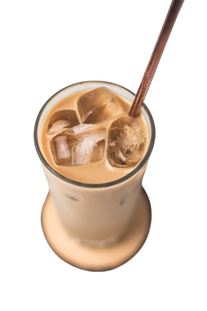

A coffee with ice, typically served with a dash of milk, cream or sweetener—iced coffee is really as simple as that. Iced coffee fanatics know that whipping up this delicious drink at home is tricky, so you'll want to try a Hyperchiller to master your DIY iced coffee recipe.
ICED COFFEE
A coffee with ice, typically served with a dash of milk, cream or sweetener—iced coffee is really as simple as that. Iced coffee fanatics know that whipping up this delicious drink at home is tricky, so you'll want to try a Hyperchiller to master your DIY iced coffee recipe.